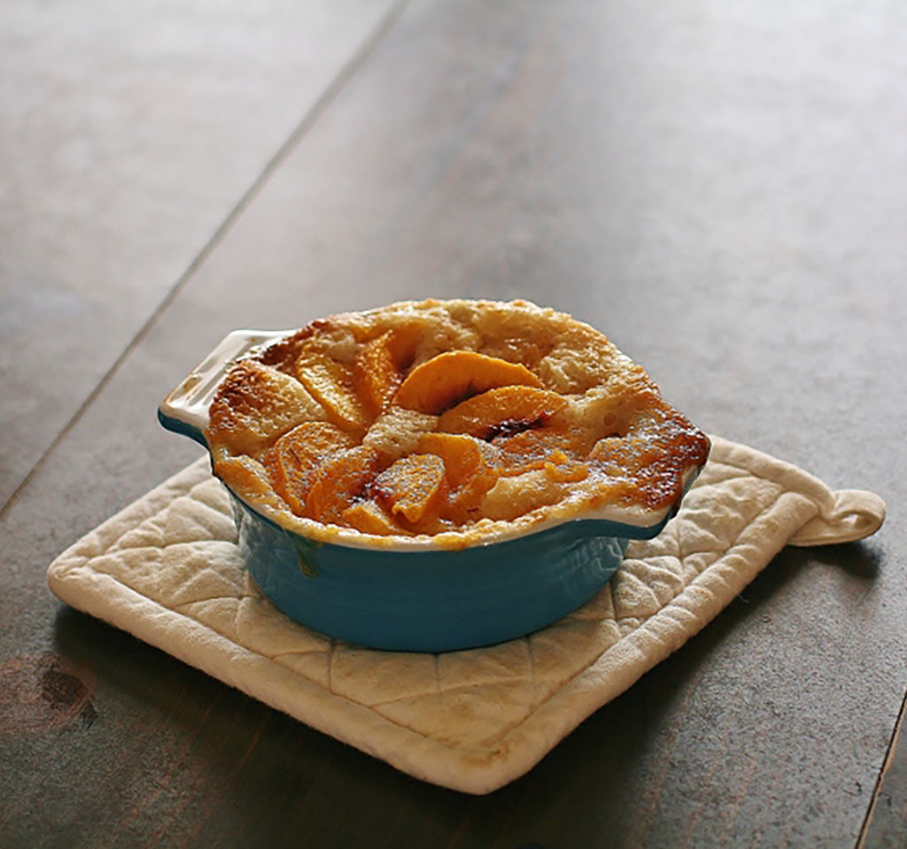

Peach Cobbler Recipe

Description
Warm, golden brown crust, peach cobbler. Serve with ice cream or whipped cream for a yummy treat!
Ingredients
- ½ cup butter, melted
- 1 (16 ounce) package frozen peach slices
- ⅔ cup white sugar
- ½ cup water
- 1 cup all-purpose flour
- 1 cup white sugar
- ½ cup milk
- 1 ½ teaspoons baking powder
- ¼ teaspoon salt
Steps
- Preheat oven to 350° F (175 degrees C). Spread melted butter in a 2-quart baking dish.
- Heat peaches, ⅔ cup sugar, and water in a saucepan over medium-high heat, stirring occasional, until slightly thickened, about 5 minutes; remove from heat.
- Mix flour, 1 cup sugar, milk, baking powder, and salt in a bowl until batter is combined; pour over melted butter in baking dish. Arrange peaches over the batter and pour any remaining liquid on top.
- Bake in preheated oven until golden brown, 40 to 45 minutes.